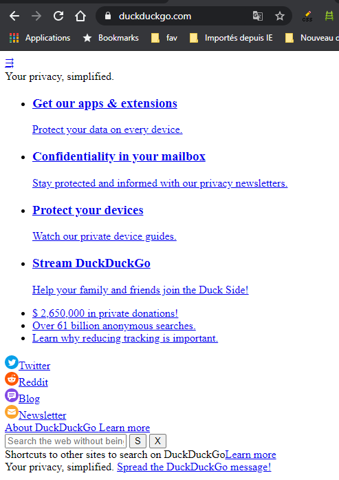

Test by disabling CSS
Disabling CSS is a good way to ensure compliance with certain best practices and to validate some important accessibility criteria.
To disable CSS, the easiest way is to install the "Web developer toolbar" extension for FireFox or Chrome (https://chrispederick.com/work/web-developer/). Once this is in place, click on the "CSS" menu, then "Disable all styles".
Separate content from presentation #
Although this is only a best practice, the strict separation of CSS and HTML is important with regard to quality and maintainability of the code and sometimes has an impact on accessibility, by limiting the possibilities of modifying the visual rendering of the pages.
By disabling CSS, the page is displayed with the browser's default styles (blue underlined link, black text, white background, etc.). This is to verify that the content is not styled by inline CSS.

Reading order and hidden content #
The order of appearance of the content in the code must respect the order of visual display, if this affects comprehension. The problem can arise due, among other things, to the use of these types of CSS properties: position:, float:, display: flexbox (https://wiki.csswg.org/spec/css3-flexbox/accessibility) or display: grid (https://webdesign.tutsplus.com/articles/a-guide-to-css-grid-and-accessibility--cms-32857). Indeed, these properties can modify the display order of content.
Hidden content, which can be displayed by a user action, must also be displayed in the right place on the page so that the reading order is still understandable.
By disabling CSS, the page content is displayed in the order of appearance in the code, so it's easy to check that the content is understandable in that order.
Warning: In addition, you can see the content visually hidden and intended for assistive technologies (accessible masking) and therefore check its relevance and usefulness.
Content semantics and presentation table #
To be accessible, the content of a page must have a semantic structure that makes it possible to better understand its meaning.
By disabling CSS, the page is displayed with the browser's default styles (blue underlined link, black text, white background, etc.). This makes it possible to verify that the content is semantized with lists, emphases, paragraphs, titles...
And that the content is not laid out with HTML tables, because therefore it is still displayed as a table even with CSS disabled. While this is not an accessibility issue, it is a very bad practice.
Information carried only by color #
Information should not be carried only by color.
By disabling CSS, we disable styles and therefore colors. We can thus verify that information are not conveyed only through a color.
Informative content generated via CSS #
Content can be generated by CSS via pseudo-elements (::before, ::after) or the content: property. It is not advisable to generate informative content with such methods because their support is low for older versions of assistive technologies, so avoid and test!
For the background-image: property, the risk is to display images carrying information in CSS which will be inaccessible to assistive t&echnologies.
Disabling CSS prevents the display of pseudo-elements and ignores the content: property, so we can identify the content generated by CSS and identify if there is loss of information. For images carrying information inserted in CSS, they will disappear with CSS disabled, this is an accessibility issue to be careful of.